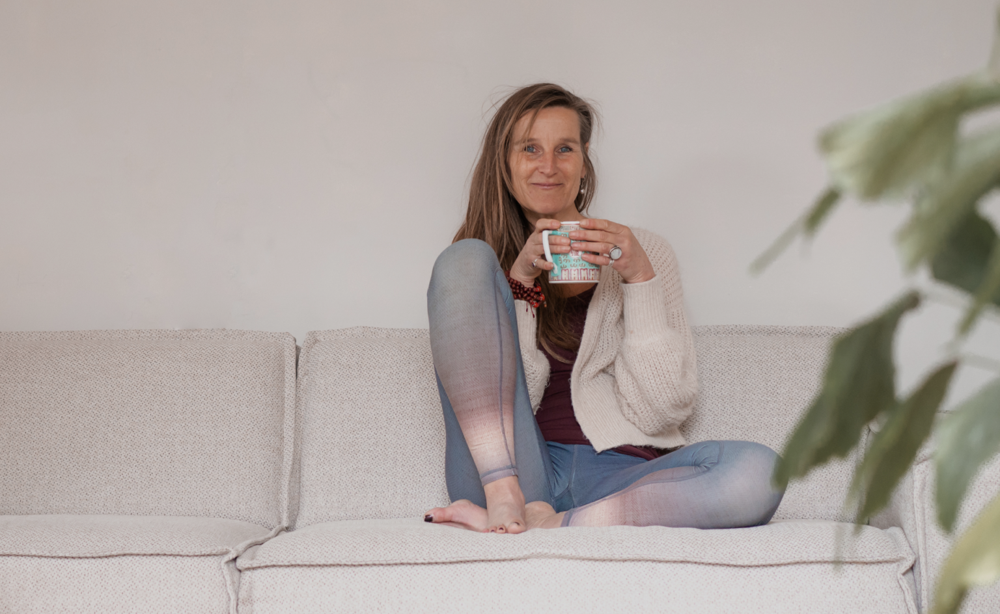
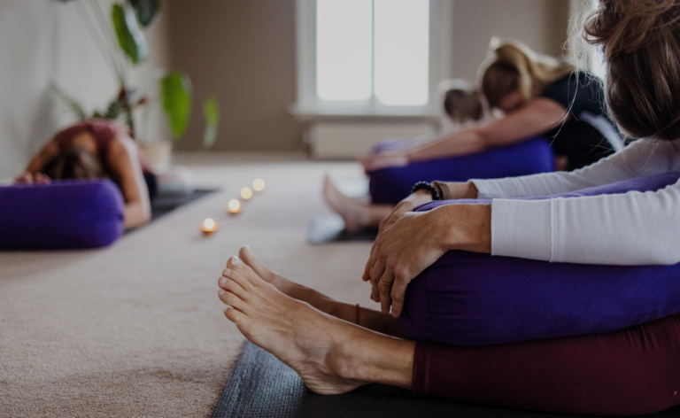

Ben jij op zoek naar begeleiding in: rust in het hoofd, ontspanning, ademruimte, het voorkomen van een burn-out en fijne yogalessen?
Ben jij op zoek naar begeleiding in; rust in het hoofd, ontspanning, lichaamsbewustzijn, ademruimte, het voorkomen van een burn-out, stress release en fijne yogalessen?
Bekijk dan het aanbod op deze website en neem bij vragen gerust contact op. Vergeet niet ook een kijkje te nemen bij de fijne retreats die ik geef en reizen naar Nepal, het land wat mij zo lief is.
Bij iedere les of sessie is het mijn doel om mensen een gevoel van ’thuis komen’ te geven. In mijn yoga en coaching is mijn werkwijze altijd gericht op innerlijke balans en heling.
Bij yoga en coaching is mijn werkwijze altijd gericht op innerlijke rust, balans en heling. Gun jezelf rust en ruimte; ‘kom op adem’ tijdens de retreats en mooie Nepalreizen die ik aanbied.
Deelnemers omschrijven mij als ‘down to earth’, inspirerend, professioneel en zeer ervaren.


Diverse yogalessen worden gegeven in Borculo. Yoga voor iedereen; yin yoga, vinyasa, slow flow, restorative yoga, meditatie en ademwerk. Actief, bewegend, creatief, ontspannend en verstillend.
Meer lezen
Coaching geeft helderheid, werkt preventief en is ondersteunend. Coachsessies geven je ruimte, letterlijk en figuurlijk, naar wat er leeft in jou.
Meer lezen
De Yogareis is ideaal voor iedereen die van yoga houdt én die de sfeer, oudheid, natuur en cultuur van het prachtige Nepal – het dak van de wereld – wil ervaren.
Meer lezenGroepslessen yoga zijn in Borculo. Individuele yoga, adem- en coachtrajecten geef ik bij De Heelboom, centrum voor leven in balans in Ruurlo – ’t Rikkelder 22c, naast de apotheek. Welkom!
Vier uur van tevoren kan je de les nog kosteloos annuleren bij momoyoga, daarna niet meer. Op verzoek kan je dan de online yogales van die week voor thuis ontvangen.
Meedoen met 2 proeflessen? Klik op onderstaande knop en vul onderaan het formulier in!
Bij iedere les of sessie is het mijn doel om mensen een gevoel van ’thuis komen’ te geven. Heb je een vraag of wil je een afspraak maken? Neem gerust contact met mij op.